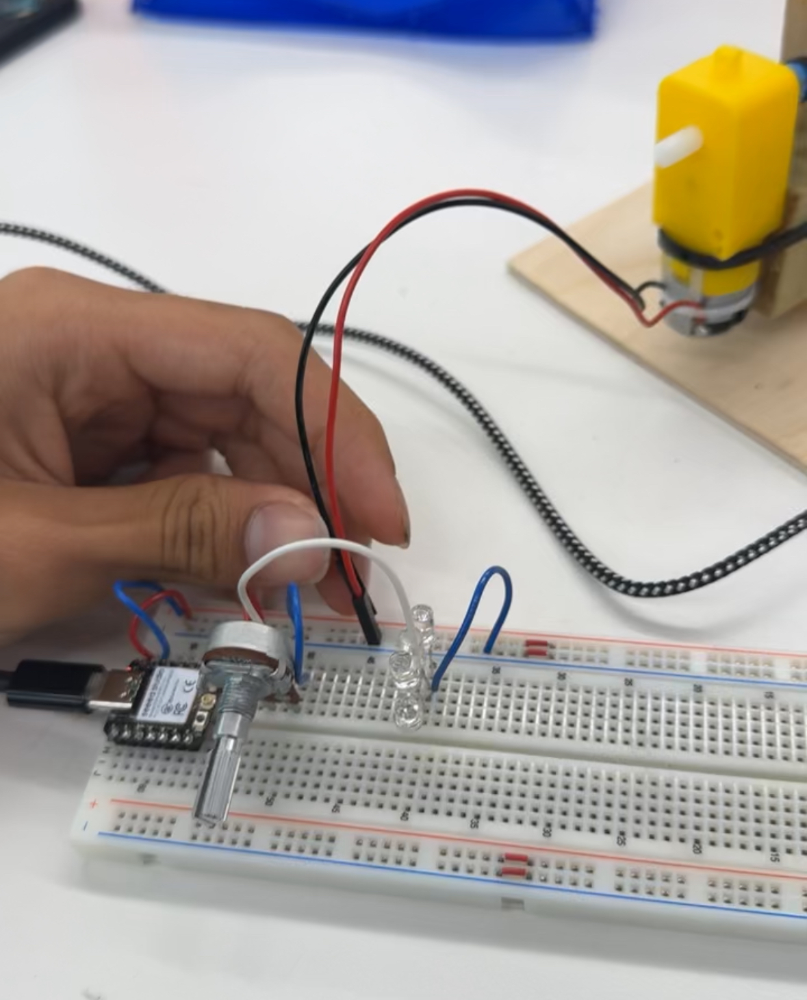
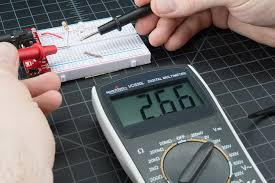

<div class="textcontainer">
<p class="margin"> </p>
<h3>Week 3: Hand Tools and Fabrication</h3>
<br>
<h4>My kinetic figure is a sculpture with colorful binder clips moving up and down:</h4>
<br>
<html lang="en">
<head>
<meta charset="UTF-8">
<title>Media in One Row</title>
<style>
.media-row {
display: flex;
gap: 10px; /* space between items */
justify-content: center;
align-items: flex-start;
flex-wrap: nowrap; /* don't allow wrap */
}
</style>
</head>
<body>
<div class="media-row">
<img style="height: 500px; width: 300px;" src="./front.jpg" alt="front view">
<img style="height: 500px; width: 300px;" src="./side.jpg" alt="side view">
<video width="800" height="500" controls>
<source src="demo.mp4" type="video/mp4">
Your browser does not support the video tag.
</video>
</div>
</body>
</html>
<br>
<h4>For the first step, I made a CAD for the bird figure:
<br> (couldnt use this due to classmates dishonesty regarding the line for the laser cutter)</h4>
<image style="height: 400px; width: 500px;" src="./BirdCAD.png" alt="bird CAD"> </image>
<br>
<br>
<h4>Then I had to build the platform, I cut thin wood for the base, and added 2 wood peices which would be supporting the shaft mechanism.</h4>
<br>
<image style="height: 400px; width: 500px;" src="./plywood.jpg" alt="plywood"> </image>
<br>
<br>
<h4>To actually make the colorful clips move, I bent metal wire into an uneven, wavy shape so that when it turns, it pushes the binder clips up and down in a repeating pattern. Next, I had to include circuitry; I connected the ground, power, and analog to the potentiometer, and connected a motor so I can adjust the motor speed. </h4>
<br>

<br>
<h4> After measuring the voltage of my circuit, I got 5V and used ohms law to find a current of 300 mA. </h4>

</div>